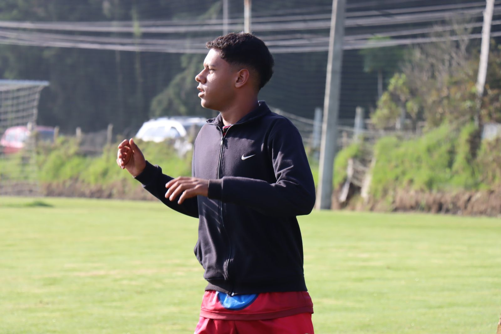
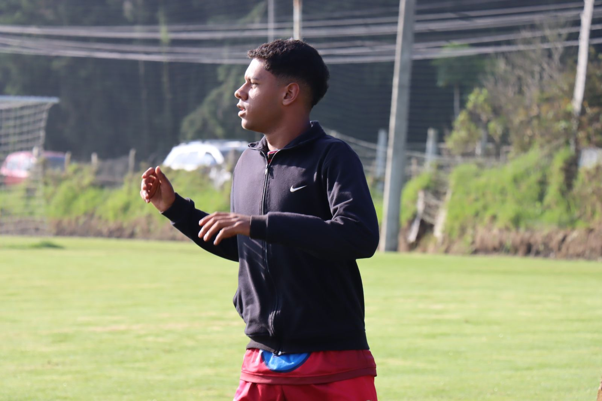
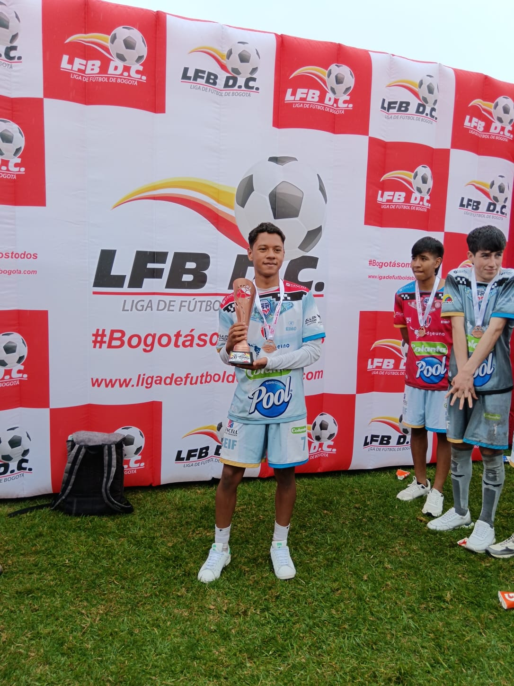
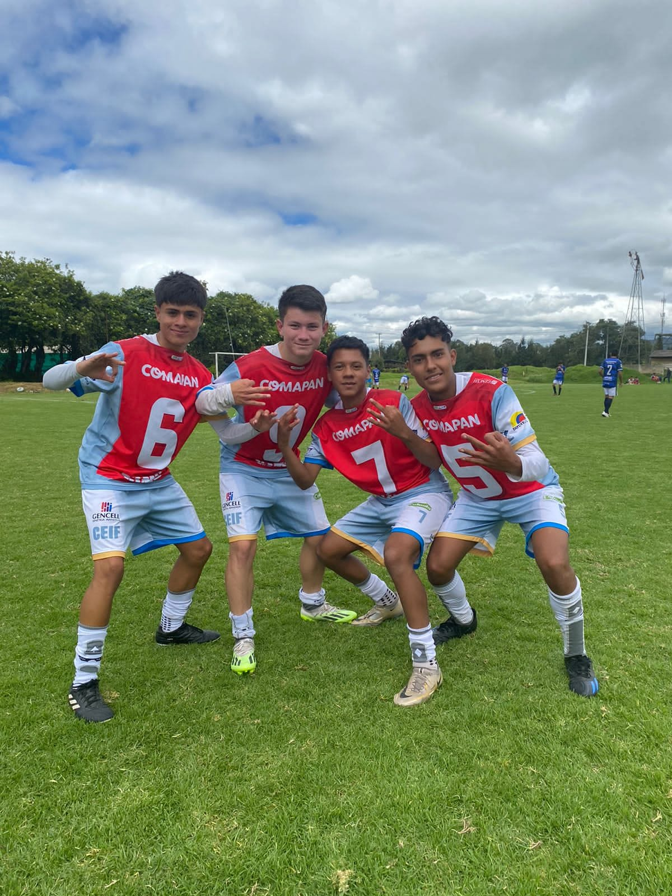
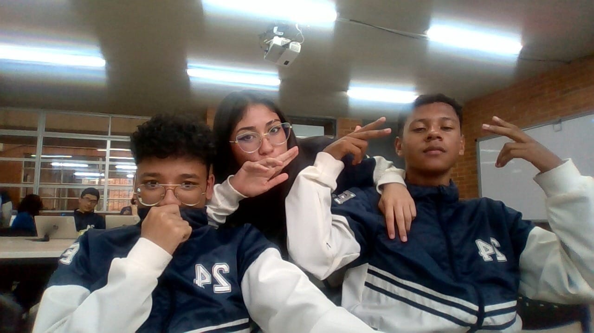
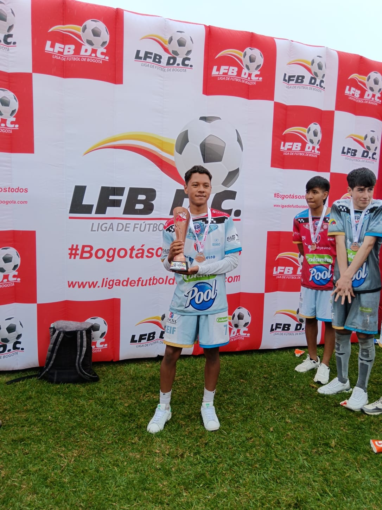
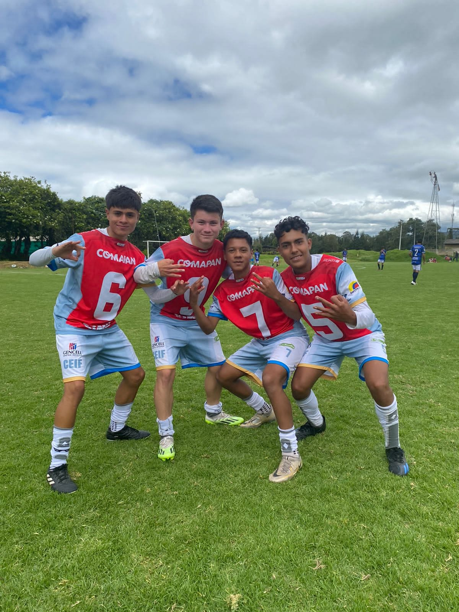
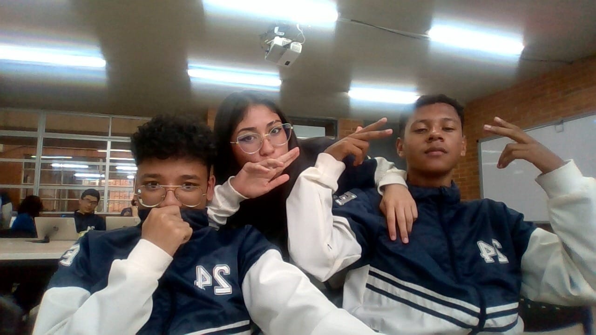

My History
I was born in Bogotá, Colombia, on July 20, 2007. I was born into a beautiful coastal family; they have always been there for me, providing support in difficult moments. I have few memories of my early years, but I can say that I was a very charismatic child. From a young age, I found a great love for soccer, for the club Atletico nacional and for the player Cristiano Ronaldo.
I have always been a sensitive boy and a good student from kindergarten through high school. I didn't really like studying, but my parents always instilled in me that it was the best thing for my future. They taught me to always strive to be the best at what I do. I consistently ranked among the top students, and despite my initial reluctance, this period helped me develop discipline, perseverance, and dedication.

My life changed dramatically before and after the COVID-19 pandemic. Before the pandemic, I was a very shy boy. Although I liked soccer, I wasn’t very good at it and never took it seriously. I mostly focused on my studies and spent the rest of the day at home.
Everything changed with the arrival of the pandemic. Although it was a shocking experience, it brought many transformations to my life. Unfortunately, my academic performance dropped because I struggled with virtual classes. However, my personality evolved—I was no longer shy, I enjoyed socializing, and I spent more time talking and playing video games with my friends. I also started practicing soccer daily on my house's terrace, which significantly improved my skills. After the pandemic, my father enrolled me in a soccer club for the first time.
In 2021, my sports journey truly began. Although I started in a low-level club, I stood out for my speed, physical strength, and dribbling ability. I made great friends, improved my skills, and regained my academic focus.
In 2022, things improved even more. I moved from a small soccer school to a professional club (Fortaleza C.E.I.F.). After trying out, they saw my potential and accepted me. I joined a strong team where I learned valuable lessons and met incredible people. I started training daily, became disciplined with my time, diet, and routine, and lived unforgettable experiences.
Today, I continue developing skills for my future. I became obsessed with success, reading books, following routines, and acquiring valuable abilities. Unfortunately, in 2024, I had to give up my dream of being a professional soccer player after receiving a scholarship to continue my studies. Although soccer was my passion, my parents believed education was the best path for me. During my last two years of high school, I took a software development course, which sparked my love for technology. Now, I am grateful for the scholarship because it allows me to pursue something I enjoy. I will keep striving for success every day.
 

 




